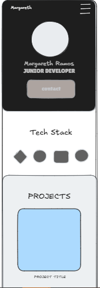
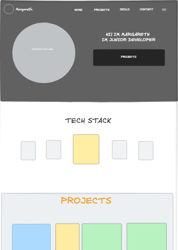

Site Name
Name: Margareth Ramos | Software & Web Solutions
Description: This name establishes my professional brand as a multi-disciplinary developer. It reflects my dual focus on aesthetic web design and robust software development, targeting both local and international (bilingual) opportunities.
Site Purpose
The site serves as a professional showcase for my expertise in HTML5, CSS3 (Grid/Flexbox), and SQL database modeling. It highlights my ability to build mobile-first responsive interfaces and custom HTML email architecture, while demonstrating the professional stability I've maintained in corporate environments.
Scenarios
- Does Margareth have experience with complex CSS layouts and cross-client compatible HTML email signatures?
- How does her background in database management (MySQL Workbench) integrate with her web development projects?
Color Schema
The palette is inspired by modern development environments with a "Neon/Cyber" twist for high visual impact:
Typography
- Montserrat: Applied to headings for a clean, bold, and modern tech-industry aesthetic.
- Lato: Applied to body text to ensure high readability for technical documentation and project descriptions.
Wireframes
Mobile View
A single-column, mobile-first design. It includes a collapsed navigation menu, a hero section highlighting my bilingual (C1) skills, and vertically stacked cards for my portfolios.

Desktop View
A multi-column layout using CSS Grid. Features a persistent sidebar for technical skills (Git, Python, MySQL), a central gallery for project showcases, and a professional contact section.
